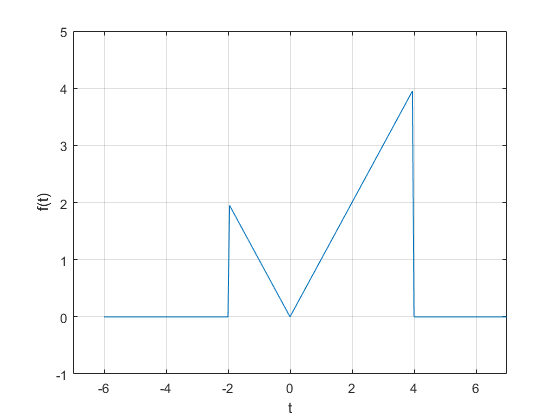
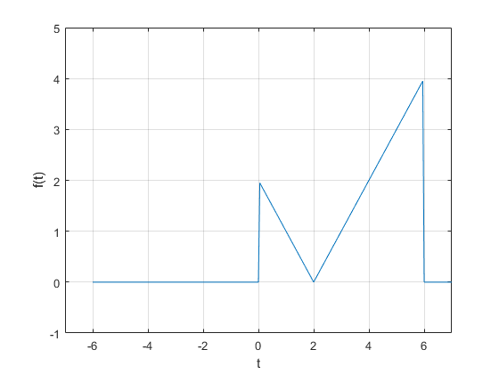

Práctica 3: Señales tiempo continuo
Autores:
Hernandez Lugardo Luis Enrique.
Silverio Jiménez Cesar Antonio.
Contents
Descripción general de MATLAB
En 1984 surge la primera versión, creado por Cleve Moler, con la idea de usar paquetes de subrutinas escritas en Fortran en los cursos de Análisis Numérico y Algebra Lineal, sin tener una necesidad de programas que usaran este lenguaje. El lenguaje de programación M se creó en 1970 proporcionando un acceso sencillo al Software de matrices LINPACK y EISPACK sin tener que hacer uso del lenguaje Fortran. Ya en 2004 se apreciaba que MATLAB era usado por aproximadamente más de un millón de personas, tanto académicos como empresarios.
Matemáticas. Gráficos. Programación. La plataforma MATLAB está optimizada para resolver problemas de ingeniería y científicos. El lenguaje MATLAB basado en matriz es la forma más natural del mundo para expresar matemáticas computacionales. Los gráficos integrados facilitan la visualización y la obtención de información a partir de los datos. Una amplia biblioteca de cajas de herramientas preconstruidas le permite comenzar de inmediato con algoritmos esenciales para su dominio. El entorno de escritorio invita a la experimentación, exploración y descubrimiento. Estas herramientas y capacidades de MATLAB están rigurosamente probadas y diseñadas para trabajar juntas.
Acontinuacion se dejaron algunos en lances para emprender en Matlab
https://www.youtube.com/watch?v=npKnZdStgXM=
http://webs.ucm.es/centros/cont/descargas/documento11541.pdf
https://matlabacademy.mathworks.com/es
GNU Octave
Octave o GNU Octave es un programa y lenguaje de programación para realizar cálculos numéricos. Como su nombre indica, Octave es parte del proyecto GNU. Es considerado el equivalente libre de MATLAB. Entre varias características que comparten, se puede destacar que ambos ofrecen un intérprete, permitiendo ejecutar órdenes en modo interactivo. Nótese que Octave no es un sistema de álgebra computacional, como lo es Maxima, sino que está orientado al análisis numérico.
Detalles técnicos.
- Octave está escrito en C++ usando la biblioteca STL.
- Tiene un intérprete de su propio lenguaje (de sintaxis casi idéntica a Matlab), y permite una ejecución interactiva o por lotes.
- Su lenguaje puede ser extendido con funciones y procedimientos, por medio de módulos dinámicos.
- Utiliza otros programas GNU para ofrecer al usuario la posibilidad de crear gráficos para luego imprimirlos o guardarlos (Grace).
- Dentro del lenguaje también se comporta como una consola de órdenes (shell). Esto permite listar contenidos de directorios, por ejemplo.
- Además de correr en plataformas Unix también lo hace en Windows.
- Puede cargar archivos con funciones de Matlab (reconocibles por la extensión .m).
- Tiene ayuda en español.
Python
Python es un lenguaje de scripting independiente de plataforma y orientado a objetos, preparado para realizar cualquier tipo de programa, desde aplicaciones Windows a servidores de red o incluso, páginas web. Es un lenguaje interpretado, lo que significa que no se necesita compilar el código fuente para poder ejecutarlo, lo que ofrece ventajas como la rapidez de desarrollo e inconvenientes como una menor velocidad. En los últimos años el lenguaje se ha hecho muy popular, gracias a varias razones como:
- La cantidad de librerías que contiene, tipos de datos y funciones incorporadas en el propio lenguaje, que ayudan a realizar muchas tareas habituales sin necesidad de tener que programarlas desde cero.
- La sencillez y velocidad con la que se crean los programas. Un programa en Python puede tener de 3 a 5 líneas de código menos que su equivalente en Java o C.
- La cantidad de plataformas en las que podemos desarrollar, como Unix, Windows, OS/2, Mac, Amiga y otros.
- Además, Python es gratuito, incluso para propósitos empresariales.
Entregable 01
Crea una función que se llame fun1 y reciba dos parametros y la función debe regresar la evaluación , esta función debe trabajr con y . Debe mostrar su código en el reporte (sin ejecutar).
function [x1]= fun1(w,a) x1=(a)/(a^2+w^2) end
Entregable 02
Construya una función que gráfique funciones de en el formato de su elección y pruebe su código mostrando la gráfica de vs en el intervalo para , no debe incluir el código, solo el uso de la función para mostrar la gráfica
w=[-2:0.01:2]; a=1; plot(w,fun1(w,a));
Entregable 03
Construya una función que gráfique funciones de en el formato de su elección y pruebe su código mostrando la gráfica de la transformada de Fourier en de la función , puede utilizar una función anonima para este fin, no debe incluir el código, solo el uso de la función para mostrarla gráfica. Reporte la gráfica de de (recuerde que ya tiene una función para esto). Reporte del espectro de magnitud y del espectro de fase en (puedes con sultar con help la descripción de abs, angle, atan2). Solo reporte las graficas.
Entregable 04
Realiza las mismas operaciones que Lathi en las secciones M1.1 a M1.4 que se encuentra al final del capítulo 1 y antes de la sección de problemas, cambie los inline por funciones anonimas.
M1.1 Funciones de línea
Considere definir la sinusoide amortiguada exponencialmente .
>> f = @(t) (exp(-t).*cos(2*pi*t))
f(t) = exp(-t).*cos(2*pi*t)Una vez definido, puede evaluarse simplemente pasando los valores de entrada de interés. Por ejemplo,
>> t = 0;
>> f(t)
ans = 1Suponga que el vector t se elige para incluir solo los enteros contenidos en , a saber .
>> t =(-2:2);
Esta entrada vectorial se evalúa para formar una salida vectorial. El comando plot representa gráficamente el resultado, que se muestra en la figura.
>> plot(t,f(t));
>> xlabel('t'); ylable('f(t)'); grid;f = @(t) (exp(-t).*cos(2*pi*t)); t =(-2:2); plot(t,f(t)); xlabel('t'); ylabel('f(t)'); grid;
Las líneas de cuadrícula, agregadas mediante el comando de cuadrícula, ayudan a la identificación de características. Desafortunadamente, la trama no ilustra el comportamiento oscilatorio esperado. Se requieren más puntos para representar adecuadamente .
La pregunta, entonces, es ¿cuántos puntos son suficientes? Si se eligen muy pocos puntos, se pierde información. Si se eligen demasiados puntos, se desperdician memoria y tiempo. Se necesita un equilibrio. Para las funciones oscilatorias, el trazado de 20 a 200 puntos por oscilación es normalmente adecuado. Para el presente caso, se elige t para dar 100 puntos por oscilación.
>> t = (-2:0.01:2);
Nuevamente, la función se evalúa y se traza.
>> plot (t,f(t));
>> xlabel('t'); ylabel('f(t)'); grid;El resultado, que se muestra en la Figura, es una representación precisa de .
f = @(t) (exp(-t).*cos(2*pi*t)); t =(-2:0.01:2); plot(t,f(t)); xlabel('t'); ylabel('f(t)'); grid;
M1.2 Operadores relacionales y la función de paso de unidad
La función de paso unitario se define fácilmente utilizando el operador relacional >=.
>> u = @(t)(t>=0)
u(t) = (t>=0)Cualquier función con una discontinuidad de salto, como el paso de la unidad, es difícil de trazar. Considere trazar usando .
>> t = (-2:2);
>> plot (t,u(t));
>> xlable('t'); ylabel('u(t)');u = @(t)(t>=0); t = (-2:2); plot (t,u(t)); xlabel('t'); ylabel('u(t)');
El primer problema se corrige ampliando verticalmente el cuadro delimitador con el comando de eje. El segundo problema se reduce, pero no se elimina, al agregar puntos al vector t.
>> t = (-2:0.01:2);
>> plot (t,u(t));
>> xlable('t'); ylabel('u(t)');
>> axis ([-2 2 -0.1 1.1]);u = @(t)(t>=0); t = (-2:0.01:2); plot (t,u(t)); xlabel('t'); ylabel('u(t)'); axis ([-2 2 -0.1 1.1]);
Los operadores relacionales se pueden combinar usando AND lógico, OR lógico y negación lógica: &, | y ~, respectivamente. Por ejemplo, (t> 0) y (t y ~ ((t <= 0) | (t = 1)) ambos prueban si 0 <t <1. ??Para demostrarlo, considere definir y graficar la unidad de pulso p (t) = u (t) - u (t - 1), como se muestra en la figura
>> p = inline('(t>=0) & (t<1)','t');
>> t = (-1:0.01:2); plot(t,p(t));
>> xlabel('t'); ylabel('p(t) = u(t)-u(t-1)');
>> axis ([-1 2 -.1 1.1]);p = @(t)((t>=0) & (t<1)); t = (-1:0.01:2); plot(t,p(t)); xlabel('t'); ylabel('p(t) = u(t)-u(t-1)'); axis ([-1 2 -.1 1.1]);
M1.3 Visualización de operaciones en la variable independiente.
Considere una versión realizable de . Desafortunadamente, MATLAB no puede multiplicar objetos en línea. Es decir, MATLAB informa un error para  cuando f y u son objetos en línea. Más bien, necesita ser definida explícitamente.
cuando f y u son objetos en línea. Más bien, necesita ser definida explícitamente.
>> g = @(t) (exp(-t).*cos(2*pi*t).*(t>=0))
g(t) = exp(-t).*cos(2*pi*t).*(t>=0)Una operación combinada de desplazamiento y escalado está representada por  , donde a y b son constantes reales arbitrarias. Como ejemplo, considere trazar sobre (?2 < t < 2). Con a = 2, la función se comprime por un factor de 2, lo que resulta en el doble de las oscilaciones por unidad t. Agregando la condición b > 0, la forma de onda se desplaza hacia la izquierda. Dada la función en línea g, es casi trivial obtener una gráfica precisa.
, donde a y b son constantes reales arbitrarias. Como ejemplo, considere trazar sobre (?2 < t < 2). Con a = 2, la función se comprime por un factor de 2, lo que resulta en el doble de las oscilaciones por unidad t. Agregando la condición b > 0, la forma de onda se desplaza hacia la izquierda. Dada la función en línea g, es casi trivial obtener una gráfica precisa.
>> t = (-2:0.01:2);
>> plot(t,g(2*t+1)); xlabel('t'); ylabel('g(2t+1)')'; grid;g = @(t) (exp(-t).*cos(2*pi*t).*(t>=0)) t = (-2:0.01:2); plot(t,g(2*t+1)); xlabel('t'); ylabel('g(2t+1)'); grid;
g =
function_handle with value:
@(t)(exp(-t).*cos(2*pi*t).*(t>=0))
Luego, considere trazar  sobre (-2 < t < 2). Como a <0, la forma de onda se reflejará. Agregando la condición b > 0, la forma de onda final se desplaza hacia la derecha
sobre (-2 < t < 2). Como a <0, la forma de onda se reflejará. Agregando la condición b > 0, la forma de onda final se desplaza hacia la derecha
>> plot(t,g(-t+1)); xlabel('t'); ylabel('g(-t+1)')'; grid;g = @(t) (exp(-t).*cos(2*pi*t).*(t>=0)) t = (-2:0.01:2); plot(t,g(-t+1)); xlabel('t'); ylabel('g(-t+1)')'; grid;
g =
function_handle with value:
@(t)(exp(-t).*cos(2*pi*t).*(t>=0))
M1.4 Integración numérica y estimación de energía de señal
Para comenzar, considere la señal simple .
>> x = inline('exp(-t).*((t>=0)&(t<1))','t');Dejando , se crea un vector de tiempo adecuado.
>> t = (0:0.01:1);
El resultado final se calcula utilizando el comando sum.
>> E_x =sum(x(t).*x(t)*0.01)
E_x = 0.4367El resultado no es perfecto, pero con un 1% de error relativo está cerca. Al reducir \delta t, se mejora la aproximación. Por ejemplo, \delta t = 0.001 produce E_x = 0.4328, o 0.1% de error relativo.
Para usar quad para estimar Ex, primero se debe describir el integrando.
>> x_squared = @(t)(exp(-2*t).*((t>=0)&(t>1)));
Estimando Ex sigue inmediatamente.
>> E_x = quad(x_squared,0,1)
E_x = 0.4323En este caso, el error relativo es -0.0026%.
>> g_squared = @(t) (exp(-2*t).*(cos(2*pi*t).*^2).*(t>=0));
Aunque el límite superior de integración es infinito, la envoltura que se desintegra exponencialmente asegura que sea efectivamente cero mucho antes de t = 100. Por lo tanto, se usa un límite superior de t = 100 junto con \delta t = 0.001.
>> t = (0:0.001:100);
>> E_g = sum(g_squared(t)*0.001)
E g = 0.2567Se obtiene una aproximación ligeramente mejor con la función quad.
>> E_g = quad(g_squared, 0,100)
E_g = 0.2562Entregable 05
Resuelve el problema 1.2.2 usando las herramientas del paso anterior.
t=(-4:0.05:2); f=@(t)((-4<t)&(t<0)).*(-t)+((0<t)&(t<2)).*(t); plot(t, f(t)) xlabel('t'); ylabel('f(t)'); grid; axis([-5 3 -1 5])
- Para la señal Ilustrada en la figura, bosqueje:
a)
t=(-4:0.05:8); f=@(t)((-4<t)&(t<0)).*(-t)+((0<t)&(t<2)).*(t); plot(t, f(t-4)) xlabel('t'); ylabel('f(t)'); grid; axis([-1 7 -1 5])
b)
t=(-6:0.05:8); f=@(t)((-4<t)&(t<0)).*(-t)+((0<t)&(t<2)).*(t); plot(t, f((2*t)/3)) xlabel('t'); ylabel('f(t)'); grid; axis([-7 7 -1 5])
c)
t=(-6:0.05:8); f=@(t)((-4<t)&(t<0)).*(-t)+((0<t)&(t<2)).*(t); plot(t, f(-t)) xlabel('t'); ylabel('f(t)'); grid; axis([-7 7 -1 5])
d)
t=(-6:0.05:8); f=@(t)((-4<t)&(t<0)).*(-t)+((0<t)&(t<2)).*(t); plot(t, f(2*t-4)) xlabel('t'); ylabel('f(t)'); grid; axis([-7 7 -1 5])
e)
t=(-6:0.05:8); f=@(t)((-4<t)&(t<0)).*(-t)+((0<t)&(t<2)).*(t); plot(t, f(2-t)) xlabel('t'); ylabel('f(t)'); grid; axis([-7 7 -1 5])
Entregable 06
Escriba una función que se llame energia que reciba como argumento una función (anonima o simbolica) y que regrese el calculo de la energía, para esto puede resultar útil investigar las instrucciones int , integral Se presupone utilizar el código solo con funciones de energia. Muestre el código sin ejecutar, y posteriormente resuelva el problema 1.1.3
function [energia]=Energia(x,li, ls)
energia=double(x^2,li,ls);
endAhora calculamos la energía del ejercicio 1.1.3
inciso a
syms t;
ex(1*t,0,1)
ex(-1*t,1,2)
ex((1+(-1))*t,0,2)
ex((1-(-1))*t,0,2)
ans = 1/3 ans = 7/3 ans = 0 ans = 32/3
% Inciso b
ex(sin(t),0,2*pi) ex(1*t,0,2*pi) ex(sin(t)+1,0,2*pi) ex(sin(t)-1,0,2*pi)
ans = pi ans = (8*pi^3)/3 ans = 3*pi ans = 3*pi
Inciso c
ex(sin(t),0,pi) ex(1*t,0,pi) ex(sin(t)+1,0,pi) ex(sin(t)-1,0,pi)
ans = pi/2 ans = pi^3/3 ans = (3*pi)/2 + 4 ans = (3*pi)/2 - 4
Entregable 07
Escriba una función que se llame potencia que reciba como argumento una función (anonima o simbolica) y que regrese el calculo de la potencia para esto puede resultar útil investigar las instrucciones int , integral Se presupone utilizar el código solo con funciones de potencia. Muestre el código sin ejecutar, y posteriormente resuelva el problema 1.1.4
function [potencia,rms] = px(x,li,ls) if li<0 li=(-1)*li; end potencia=(1/(li+ls))*(int(x^2,-li/2,ls/2)); format short; rms=sqrt(potencia); rms=vpa(rms,5); end
Resolvemos el ejercicio 1.1.4
Inciso a
syms x c;
px(-x,-2,2)
potencia = 1/6 rms = 0.40825 ans = 1/6
Inciso b
px(2*x,-2,2)
potencia = 2/3 rms = 0.8165 ans = 2/3
Inciso c
px(c*x,-2,2)
potencia = c^2/6 rms = (0.16667*c^2)^(1/2) ans = c^2/6
Referencias.
https://www.mathworks.com/help/matlab/learn_matlab/product-description.html
https://es.wikipedia.org/wiki/GNU_Octave
B. P. Lathi, Linear Systems and Signals, Second Edition, Oxford
University Press, Inc., 2005, segunda edicion, pp. 689.